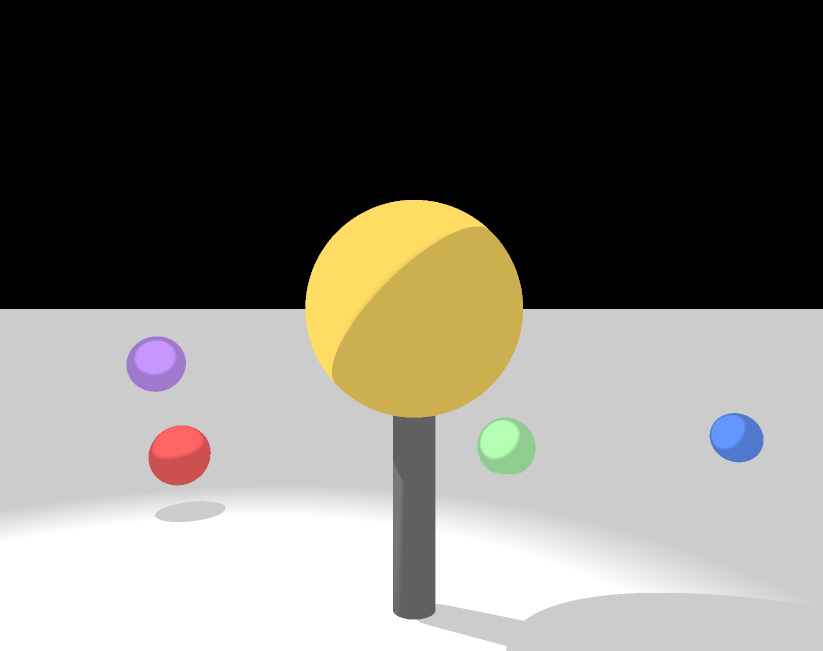
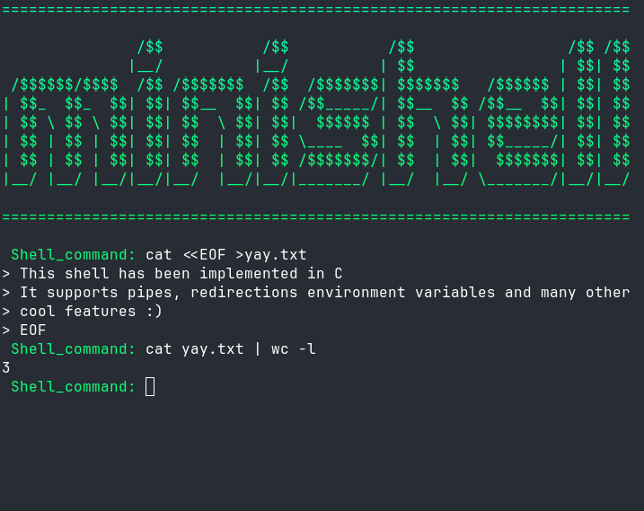

TECHNICAL PORTFOLIO · PARIS
Developing things.
From low-level C programs to containerized applications, I like understanding how things work and building them from the ground up.
Explore selected work ↘01 — SELECTED WORK
A selection of technical projects
Personal Blog
A containerized WordPress application built with Docker, Nginx, PHP-FPM and MariaDB.

miniRT
A raytracing engine written from scratch in C, built around geometry, vectors and light simulation.

Minishell
A Unix shell implementation exploring processes, parsing, pipes, signals and file descriptors.
THE REST OF IT
Other projects ↗
More experiments, coursework and things built along the way.
02 — WRITING
Articles and personal research
03 — ABOUT
I study technology to understand how things work and to develop a critical perspective on the tools and opportunities it creates. I am interested in both how technology works and what can be built with it.
These projects span system programming, infrastructure, web development and data. I am confortable with moving between layers — writing C, working with Linux and Docker, manipulating data with Python and SQL, or turning it into something useful with Power BI.
04 — TECHNOLOGIES
Tools I use to build things